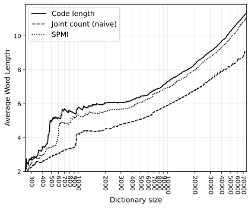
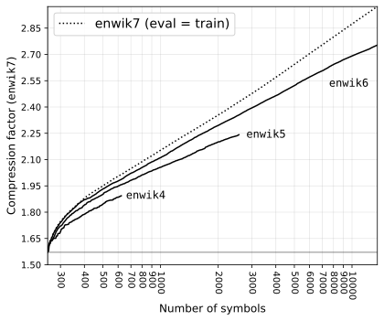
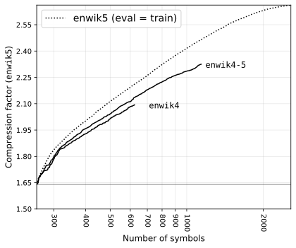

One of the more salient features of our cognition is the organization of related parts into wholes.
In the absence of clear statistical principles guiding this drive to construct, we attempt to reproduce similar structure by growing a prediction model greedily in the direction of maximal compression.
For this, a serialization format is defined for text, based on combinatorial objects equivalent to such a model, which produces codes of known lengths (i.e. information content), from which we derive a loss function to guide deterministic construction of dictionaries, of which we note their appearance and performance in compression.
Note on Overfitting
When modeling data with increasing numbers of parameters, the likelihood of the data can easily reach zero as the complexity of the data gets transferred to the model instead of getting distilled into underlying features.
In machine learning, this is called overfitting and is best pictured by regression lines (predictions) drifting away in wild and unlikely interpolations as more parameters are added to the model:

This behavior is undesirable in machine learning as it undermines the generalizability of the model which is usually an important aspect of the exercise.
In the context of compression, where the prediction of unobserved data is not as central, the phenomenon is still pathological: as the information of the data w.r.t. the model approaches zero, the information required to describe the model measurably increases in proportion.
While solutions to overfitting in machine learning almost always implicate carving off sections of the data to hide from the model only to be used later for measuring generalizability, the context of compression allows a more direct solution.
Instead of only minimizing the information (maximizing the log-likelihood) of data \(\mathrm{\bf x}\) given a model \(\theta\): \[I(\mathrm{\bf x} \mid \theta),\] we minimize the information of both the data and the model:
\[I(\mathrm{\bf x},\theta) = I(\mathrm{\bf x} \mid \theta) + I(\theta).\]
By measuring the information of the model together with the data’s, we capture any information that merely transfers from data (given the model) to the model and avoid an increase in parameters (model complexity) that doesn’t decrease the total information.
Serializing Combinatorial Objects
As shown previously, counting the variety of parametrized systems can produce simple closed formulas of their information content (code length) w.r.t. an optimal encoder.
For example, the information in a sequence of \(N\) symbols from an alphabet of size \(m\) with known counts (a.k.a. multiplicities) \(n_0, n_1, ... n_{m-1}\) using an optimal probabilistic model (i.e. an updating categorical MLE) is simply the \(\log\) of the multinomial coefficient with those parameters:
\[\log {N \choose n_0,n_1,\ldots,n_{m-1}},\]
which is simply the number of ways to order a multiset of size \(N\) with multiplicities \(n_0,n_1,\ldots,n_{m-1}\) (proof).
Further, given a total order (e.g. lexicographic) on the summoned combinatorial object (here multiset permutations), one can derive so-called “ranking” and “unranking” algorithms to map to and from natural numbers.
Interpreting these numbers in binary produces a serialization that is equivalent in compression efficiency to entropy coding the sequence symbol-by-symbol using derived probabilities.
We now define a serialization format for text data and its model using such combinatorial codes.
Format Description
As stated, a sequence of \(N\) symbols from an alphabet of size \(m\) with counts \(n_0,n_1,\ldots,n_{m-1}\) can be encoded as a multiset permutation with information:
\[\underbrace{\log {N \choose n_0,n_1,\ldots,n_{m-1}}, \vphantom{\prod_{\displaystyle i}}} _{\displaystyle\mathrm{String} \vphantom{\prod}}\]
given that the counts are known.
The counts can themselves be encoded by counting the number of multisets of total count \(N\) and distinct symbols \(m\), according to the multiset coefficient:
\[\left(\!\!\!{m \choose N}\!\!\!\right) = {m+N-1 \choose N} = \frac{(m+N-1)!}{N!\,(m-1)!},\]
or equivalently, using stars-and-bars (a permutation of \(N\) stars and \(m-1\) bars, giving the binomial coefficient:
\[{N + m - 1 \choose m - 1} = \frac{(N+m-1)!}{N!\,(m-1)!}.\]
We prepend this encoding of counts to the encoding of the ordering of the sequence:
\[\underbrace{\log {N + m - 1 \choose m - 1} \vphantom{\prod_{\displaystyle i}}} _{\displaystyle n_0,n_1,\ldots,n_{m-1} \vphantom{\prod}} + \underbrace{\log {N \choose n_0,n_1,\ldots,n_{m-1}} \vphantom{\prod_{\displaystyle i}}} _{\displaystyle\mathrm{String} \vphantom{\prod}}\]
This, in turn, assumes knowledge of parameters \(N\) and \(m\).
The length of the binary expansion of a natural number is on the order of \(\log_2 n\), but without the prefix property, the length of such an expansion (i.e. the cut-off point between the number’s code and the rest of the code) is unknowable by a decoder. To address this, a universal integer code (e.g. Elias) is used taking at most \(2\log_2 n\) bits:
\[\underbrace{2\log m\vphantom{\prod_{\displaystyle i}}} _{\displaystyle m \vphantom{\prod}} + \underbrace{2\log N\vphantom{\prod_{\displaystyle i}}} _{\displaystyle N \vphantom{\prod}} + \underbrace{\log {N + m - 1 \choose m - 1} \vphantom{\prod_{\displaystyle i}}} _{\displaystyle n_0,n_1,\ldots,n_{m-1} \vphantom{\prod}} + \underbrace{\log {N \choose n_0,n_1,\ldots,n_{m-1}} \vphantom{\prod_{\displaystyle i}}} _{\displaystyle\mathrm{String} \vphantom{\prod}}.\]
Assuming the data is not random and contains repeating patterns, we can reduce the size of this encoding by chunking symbols together into new symbols (a.k.a. tokens), provided we append these definitions to the encoding.
Inductive Constructions
For a sufficiently universal method of dictionary construction (tokenization) that affords incremental greedy additions, we opt for a dictionary defined inductively with rules consisting of two previously defined symbols that concatenate to form a new joint symbol.
By incrementally growing the dictionary and substituting instances where the parts appear together in the string with joint symbols, the exploration into the space of \(n\)-grams will remain sparse, avoiding the combinatorial explosion associated with assigning parameters to each possible combination of symbols and the requirement to decide on a predetermined model size.
We start with an alphabet of the 256 bytes. The first construction rule is therefore one among
\[256 \times 256\]
possible pairs. For the second rule introduction, the set of possible pairs includes the previously introduced symbol and is one larger:
\[256 \times 256 \times 257 \times 257 \times \ldots\]
In general, for \(m\) symbols, this has variety
\[\left(\frac{(m-1)!}{255!}\right)^2\]
which is information
\[\begin{align} \log\left(\left(\frac{(m-1)!}{255!}\right)^2\right) = 2\log\left(\frac{(m-1)!}{255!}\right). \end{align}\]
We can also get away with encoding \(m - 256\) instead of \(m\) since it will always be the case that \(m \geq 256\). The information content of our entire encoding is therefore:
\[\begin{align} I_{(m, \mathrm{\bf r}, N, \mathrm{\bf n}, \mathrm{\bf s})} =~&~ \underbrace{2\log (m-256)\vphantom{\prod_{\displaystyle i}}} _{\displaystyle m \vphantom{\prod}} + \underbrace{2\log \left(\frac{(m-1)!}{255!}\right)\vphantom{\prod_{\displaystyle i}}} _{\displaystyle\mathrm{{\bf r}: Rules} \vphantom{\prod}} + \underbrace{2\log N\vphantom{\prod_{\displaystyle i}}} _{\displaystyle N \vphantom{\prod}}\\[10pt] &+ \underbrace{\log {N + m - 1 \choose m - 1} \vphantom{\prod_{\displaystyle i}}} _{\displaystyle \mathrm{\bf n}: n_0,n_1,\ldots,n_{m-1} \vphantom{\prod}} + \underbrace{\log {N \choose n_0,n_1,\ldots,n_{m-1}} \vphantom{\prod_{\displaystyle i}}} _{\displaystyle\mathrm{{\bf s}: String} \vphantom{\prod}} \end{align}\]
which is only a function of dictionary size \(m\) and counts vector \(\mathrm{\bf n}: n_0, n_1, ..., n_{m-1}\) since \(N = \sum\mathrm{\bf n}\).
Loss Function
Evaluating the above formula in whole for each possible addition to the model to determine the optimal next step is logically what we want to achieve but computationally excessive.
The terms for the length of the encoding of \(m\) (dictionary size) and \(\mathrm{\bf r}\) (dictionary) are constant in information regardless of which symbols are chosen for the next construction. While they contribute in determining when the program stops (when the total length stops decreasing), they can be dropped when sorting candidate joints. Same goes for the encoding of parameter \(N\) which is mostly constant between introductions and at worse only a few bits in size at specific steps between powers of two, which at most one will be crossed as the maximum change \(N\) can take is to get halved if every consecutive pair in the working string gets constructed into a new symbol.
For the introduction of a joint symbol with count \(n_{01}\), constructed from symbols with counts \((n_0,n_1)\), the main terms that affect the total information are the term for parameters \(\mathrm{\bf n}\) (the counts):
\[\begin{align} \Delta I_{\mathrm{\bf n}} &= I_{\mathrm{\bf n}'} - I_{\mathrm{\bf n}}\\[5pt] &= \log {N - n_{01} + m \choose m} - \log {N + m - 1 \choose m - 1}\\[5pt] &= \log \left(\frac{(N - n_{01} + m)!}{m!\,(N - n_{01})!}\right) - \log \left(\frac{(N + m - 1)!}{(m - 1)!\,N!}\right) \\[5pt] &= \log \left(\frac{(N - n_{01} + m)!\,(m - 1)!\,N!} {(N + m - 1)!\,m!\,(N - n_{01})!}\right) \\[5pt] &= \log \left(\frac{(N - n_{01} + m)!\,N!} {(N + m - 1)!\,m\,(N - n_{01})!}\right) \\[5pt] \end{align}\]
and the term for the ordering of the string:
\[\begin{align} \Delta I_\mathrm{\bf s} &= I_{\mathrm{\bf s}'} - I_\mathrm{\bf s}\\[5pt] &= \log {N - n_{01} \choose n_0 - n_{01}, n_1 - n_{01},\ldots,n_{m-1}, n_{01}} - \log {N \choose n_0,n_1,\ldots,n_{m-1}}\\[5pt] &= \begin{cases} \log\left(\displaystyle \frac{(N - n_{01})!\,n_0!} {N!\,(n_0 - 2n_{01})!\,n_{01}!} \right) & \text{when } s_0 = s_1 \\[5pt] \log\left(\displaystyle \frac{(N - n_{01})!\,n_0!\,n_1!} {N!\,(n_0 - n_{01})!\,(n_1 - n_{01})!\,n_{01}!} \right) & \text{when } s_0 \neq s_1 \end{cases} \\[5pt] &= \log \left( \frac{(N - n_{01})!\,n_0!}{N!\,n_{01}!} \right) + \begin{cases} \log \left(\frac{\displaystyle 1}{\displaystyle (n_0 - 2n_{01})!} \right) & \text{when } s_0 = s_1 \\ \log \left(\frac{\displaystyle n_1!} {\displaystyle (n_0 - n_{01})!\,(n_1 - n_{01})!} \right) & \text{when } s_0 \neq s_1 \end{cases} \end{align}\]
$$$$
Together, some additional factors cancel out:
\[\begin{align} \Delta I_{(\mathrm{\bf n},\mathrm{\bf s})} &= \Delta I_{\mathrm{\bf n}} + \Delta I_\mathrm{\bf s} \\[5pt] &= \log \left(\frac{(N - n_{01} + m)!\,N!} {(N + m - 1)!\,m\,(N - n_{01})!}\right) + \log \left( \frac{(N - n_{01})!\,n_0!}{N!\,n_{01}!} \right) \\[5pt] & ~~~~ + \begin{cases} \log \left(\frac{\displaystyle 1}{\displaystyle (n_0 - 2n_{01})!} \right) & \text{when } s_0 = s_1 \\ \log \left(\frac{\displaystyle n_1!} {\displaystyle (n_0 - n_{01})!\,(n_1 - n_{01})!} \right) & \text{when } s_0 \neq s_1 \end{cases} \\[5pt] &= \log \left(\frac{(N - n_{01} + m)!\,n_0!} {(N + m - 1)!\,m\,n_{01}!} \right) + \begin{cases} \log \left(\frac{\displaystyle 1}{\displaystyle (n_0 - 2n_{01})!} \right) & \text{when } s_0 = s_1 \\ \log \left(\frac{\displaystyle n_1!} {\displaystyle (n_0 - n_{01})!\,(n_1 - n_{01})!} \right) & \text{when } s_0 \neq s_1 \end{cases} \end{align}\]
which, by logarithmic identity, can be computed in an efficient and numerically stable way with an implementation of the log-factorial using the expansion
\[\log((N - n_{01} + m)!) + \log(n_0!) - \log((N + m - 1)!)~-~...\]
$$$$
Finding the pair of symbols with counts \((n_0,n_1)\) and joint count \(n_{01}\) which minimizes this function is sufficient to find the rule to introduce which locally maximizes the compressibility of the entire encoding.
As long as this loss—together with \(N\)’s term—offsets the increase in code length from terms \(\{m,\mathrm{\bf r}\}\) incurred by an introduction, we grow the dictionary (rule set).
Implementation
We implement a greedy algorithm that, given a text file, repeatedly combines the pair of symbols that brings the greatest reduction in the overall information content until no pair produces a loss below zero. We log the introduced construction rules and information content at each step.
The program is written in Haskell:
Optimizations
A number of additional optimizations were required to run the program on inputs of significant length in a reasonable amount of time.
They mostly consist of maintaining different partial values required in the selection of optimal introductions.
Counts Bookkeeping
First, as most of the symbol counts \(n_0,n_1,\ldots,n_{m-1}\) stay constant between rule introductions, the count vector (\(O(m)\) space) is obviously preserved between iterations and only those affected by the introduced rule (the counts of the parts and the count of the new symbol) get modified. This can be achieved in \(O(1)\) time with a mutable dynamic array.
Joint Counts Bookkeeping
Similarly, the joint counts (number of times each pair of symbols appear together) vary only slightly between iterations. The whole joint count map (\(O(m^2)\) space) is therefore preserved as each is a potential candidate for the next rule.
When rewriting the string with the introduced rule \((s_0,s_1) \mapsto s_{01}\), symbols occurring immediately before \(s_0\) and immediately after \(s_1\) are subject to have their joint count with the respective part decremented and the joint count with \(s_{01}\) incremented.
Joint Positions Bookkeeping
With the above optimizations, the program can handle strings of thousands (KB) up to a million (MB) symbols.
At this point, the operation taking by far most of the run time on large strings is the \(O(N)\) pass over the input required to
rewrite joint occurrences of \((s_0,s_1)\) into \(s_{01}\) and
update joint counts at sites where \(s_{01}\) gets written
The cost of this operation is especially noticeable after the first few symbols have been introduced and joint counts—for a sample of natural text—fall sharply following a Pareto-like drop into a very long tail. The algorithm then spends most of its time performing uneventful \(O(N)\) scans of the working string, looking for the few locations where the joint it has already decided to introduce appears.
The obvious alternative to this is to store the set of construction sites (as indexes) for each candidate joint and use a string representation that allows \(O(1)\) random access at those locations when a rule is introduced.
Because the act of rewriting turns two symbols into one symbol, a vector of symbols traditionally indexed either accumulates gaps of arbitrary length over time, hindering access, or requires on the order of \(O(N)\) rewrites per introduction to close them.
The solution is to use a doubly linked list and the permanent memory addresses (or something equivalent) of nodes as indexes allowing both random access and closing gaps in constant time without affecting indexes down the line.
In practice, this incurs significant time overhead at the beginning of the execution of the program, but pays for itself many times over by accelerating the long tail of the execution.
Joint Loss Bookkeeping
The next operations which appropriates the bulk of the run-time on large inputs is the evaluation and sorting of all joints according to the loss function.
We can see this becomes severe when the size of the dictionary (\(m\)) is large as the number of possible joints grows on the order of \[O(\min(m^2,N)).\]
Examining our loss formula:
\[\Delta I_{(\mathrm{\bf n},\mathrm{\bf s})} = \log \left( \frac {(N - n_{01} + m)!\,n_0!} {(N + m - 1)!\,m\,n_{01}!} \right) + \begin{cases} \log \left( \frac {\displaystyle 1} {\displaystyle (n_0 - 2n_{01})!} \right) & \text{when } s_0 = s_1 \\ \log \left( \frac {\displaystyle n_1!} {\displaystyle (n_0 - n_{01})!\,(n_1 - n_{01})!} \right) & \text{when } s_0 \neq s_1, \end{cases}\]
splitting factors according to which term they originally came from
\[\Delta I_{(\mathrm{\bf n},\mathrm{\bf s})} = \Delta I_\mathrm{\bf n}' + \Delta I_\mathrm{\bf s}'\]
we have a loss on the encoding of the counts:
\[\Delta I_\mathrm{\bf n}' = \log \left( \frac {(N - n_{01} + m)!} {(N + m - 1)!\,m} \right), \] which is
- always negative, given \(N,m,n_{01} > 1\)
- only depends on \(N\), \(m\), and \(n_{01}\), and
- for a given \(N\) and \(m\), minimal when \(n_{01}\) is maximal,
$$$$
and one on the encoding of the ordering of the string:
\[\Delta I_\mathrm{\bf s}' = \begin{cases} \log \left( \frac { \displaystyle n_0! } { \displaystyle n_{01}! \, (n_0 - 2n_{01})! } \right) & \text{when } s_0 = s_1 \\ \log \left( \frac { \displaystyle n_0! \, n_1! } { \displaystyle n_{01}! \, (n_0 - n_{01})! \, (n_1 - n_{01})! } \right) & \text{when } s_0 \neq s_1, \end{cases} \] which is
- always positive since it can be rewritten as
\[\Delta I_\mathrm{\bf s}' = \begin{cases} \log \left( \displaystyle { n_0 \choose 2n_{01}} \cdot (2n_{01})! \right) & \text{when } s_0 = s_1 \\ \log \left( \displaystyle { n_0 \choose n_{01}} \cdot { n_1 \choose n_{01}} \cdot n_{01}! \right) & \text{when } s_0 \neq s_1, \end{cases} \]
- only depends on \(n_0\), \(n_1\), and \(n_{01}\), and
- is minimal given \(n_{01}\) when \(n_0\) and \(n_1\) are also minimal, which is \[\mathrm{argmin}~\Delta I_\mathrm{\bf s}'(n_0,n_1 \mid n_{01}) = \begin{cases} n_0 := 2n_{01} & \text{when } s_0 = s_1 \\ (n_0,n_1) := (n_{01},n_{01}) & \text{when } s_0 \neq s_1, \end{cases} \]
$$$$
Given these bounds, we can restrict our search for the minimal value of \(\Delta I_{(\mathrm{\bf n},\mathrm{\bf s})}\) on a certain subset of the highest values of \(n_{01}\).
The chosen strategy was to sort joints first according to the joint count \(n_{01}\) and—for joints with the same value of \(n_{01}\)—according to the value of \(\Delta I_\mathrm{\bf s}'\). These indexes remain constant between rule introductions where \(N\) and \(m\) necessarily change value (which affects all loss calculations), but most counts and joint counts remain constant.
Then, at each iteration, given values for \(N\) and \(m\), we traverse the joints along the spine of \(n_{01}\)’s, from high to low, computing the lowest values available for \(\Delta I_\mathrm{\bf n}'(N,m,n_{01})\) in order, and for each, add it to the minimal value of \(\Delta I_\mathrm{\bf s}'(n_0,n_1 \mid n_{01})\) (as indexed) and interrupt the traversal when
\[\begin{align} \text{best so far} <~& \Delta I_\mathrm{\bf n}'(N,m,n_{01}) \\ &\!+~ \mathrm{argmin}~\Delta I_\mathrm{\bf s}'(n_0,n_1 \mid n_{01}). \end{align}\]
This way, retrieving the joint with the minimal loss is almost instant at the cost of having to maintain the indexes of joints for which any of \(n_0\), \(n_1\), or \(n_{01}\) gets changed after each introduction.
Results
The dataset of choice is a 2006 snapshot of the English Wikipedia (XML format), following the example of the Large Text Compression Benchmark and Hutter prize.
The first \(10^9\) bytes of the snapshot are referred to as
enwik9. Truncations of smaller magnitudes are named accordingly:

$$$$
For different sized inputs, we show the evolution of the total code length (information) divided among the different components (terms) of the encoding (formula) as the dictionary grows. The contributions of the encodings of parameters \(m\) and \(N\) are too small to be noticeable and left out. The size of the encoding at \(m=256\) (empty dictionary) is indicated with a marker on the Y axis:


As one would expect the bulk of the gain in compressibility occurs with the first few introduced symbols and tapers out as introductions produce fewer modifications to the string. We also notice that greater compressibility is achieved with greater inputs (and larger dictionaries).
We can compare the compressibility, or “information density” between scales by computing a compression factor at each point in the model’s evolution:
\[\text{compression factor} = \frac{\text{original size}} {\text{compressed size}}.\]
A compression factor slightly above 1.5 is achieved across the board with an empty dictionary simply by virtue of the combinatorial encoding. Final compression factors are marked on the Y axis. The X axis is displayed in log-scale:

For a given number of symbols, greater factors are achieved by smaller sets, probably due to the reduced variance of a smaller dataset, but larger inputs are amenable to greater factors in the long run, as the large string encoding term (\(\mathrm{\bf s}\) decreasing) can support rule introductions for longer (\(\mathrm{\bf r}\) and \(\mathrm{\bf n}\) increasing) before they begin to outweigh the reduction on \(\mathrm{\bf s}\), triggering termination.
Ultimately, exponentially increasing input sizes translate to roughly exponentially increasing dictionary sizes (and running time), and linearly increasing compression factors.
Full outputs (CSV): enwik4,
enwik5,
enwik6,
enwik7.
Appearance
Chunks produced for enwik datasets are a mix of English morphemes,
words and phrases as well as markup strings from Wikipedia’s XML schema:
256: "]" + "]" ==> "]]"
257: "[" + "[" ==> "[["
258: "t" + "h" ==> "th"
259: "th" + "e" ==> "the"
260: "," + " " ==> ", "
261: "'" + "'" ==> "''"
262: " " + "the" ==> " the"
263: " the" + " " ==> " the "
264: "\n" + "*" ==> "\n*"
265: "q" + "u" ==> "qu"
266: "&" + "qu" ==> "&qu"
267: "i" + "n" ==> "in"
268: "a" + "n" ==> "an"
269: "o" + "n" ==> "on"
270: "an" + "d" ==> "and"
271: "o" + "f" ==> "of"
272: " " + "of" ==> " of"
273: ">" + "\n" ==> ">\n"
274: "in" + "g" ==> "ing"
275: "t" + ";" ==> "t;"
276: "e" + "n" ==> "en"
277: "<" + "/" ==> "</"
278: "1" + "9" ==> "19"
279: "&qu" + "o" ==> "&quo"
280: "&quo" + "t;" ==> """
...: ... + ... ==> ...Full output (CSV): enwik7.
Compare these chunks to those that result from a naive combination strategy where the most frequent joint is combined into a new symbol (e.g. Re-Pair). The produced chunks are shorter and marginally less meaningful, at least at the start:
256: "e" + " " ==> "e "
257: "t" + "h" ==> "th"
258: "s" + " " ==> "s "
259: "e" + "r" ==> "er"
260: "i" + "n" ==> "in"
261: "a" + "n" ==> "an"
262: "]" + "]" ==> "]]"
263: "[" + "[" ==> "[["
264: "d" + " " ==> "d "
265: "o" + "n" ==> "on"
266: "," + " " ==> ", "
267: "t" + " " ==> "t "
268: "o" + "r" ==> "or"
269: "th" + "e " ==> "the "
270: "e" + "n" ==> "en"
271: "t" + "i" ==> "ti"
272: "a" + "r" ==> "ar"
273: "a" + "l" ==> "al"
274: " " + " " ==> " "
275: "o" + "f" ==> "of"
276: "y" + " " ==> "y "
277: "of" + " " ==> "of "
278: "r" + "e" ==> "re"
279: "s" + "t" ==> "st"
280: "e" + "d " ==> "ed "
...: ... + ... ==> ...Full output (CSV): enwik7-naive-loss.
Naive chunks visibly have a bias towards combining symbols with high occurrences even if the combination doesn’t hold much more meaning than the sum of its parts. For example compared to the more meaningful
">\n", "</", "ing", """,the following chunks have more occurrences and are therefore selected earlier by the naive policy:
"e ", "s ", "d ", "t ".In terms of probability:
\[p(s_0,s_1) \sim p(s_0)p(s_1)\]
even when the two symbols are independent.
Instead, if we are interested in how much a joint occurs relative to a null hypothesis of independence, we get a ratio:
\[\frac{p(s_0,s_1)}{p(s_0)p(s_1)}\]
which, in information terms, is known as the pointwise mutual information (PMI):
\[\begin{align} \mathrm{pmi}(s_0;s_1) &= \log\left(\frac{p(s_0,s_1)}{p(s_0)p(s_1)}\right) \\[5pt] &= \log\left(\frac{n_{01} \cdot N \cdot N}{N \cdot n_0 \cdot n_1}\right) \\[5pt] &= \log\left(\frac{n_{01} \, N}{n_0 \, n_1}\right) \\ \end{align}\]
Using this to score joint candidates, produces the somewhat degenerate dictionary containing rare byte pairs that occur almost exclusively together:
256: "�" + "�" ==> "ی"
257: "�" + "�" ==> "Ә"
258: "�" + "�" ==> "ے"
259: "@" + "@" ==> "@@"
260: "@@" + "@@" ==> "@@@@"
261: "@@@@" + "@@" ==> "@@@@@@"
262: "@@@@" + "@" ==> "@@@@@"
263: "@@" + "@" ==> "@@@"
264: "�" + "�" ==> "ґ"
265: "�" + "�" ==> "��"
...: ... + ... ==> ...We scale this information by the joint count to obtain a function more representative of total change in information:
\[\begin{align} \mathrm{spmi}(s_0;s_1) &~=~ n_{01} \cdot \, \mathrm{pmi}(s_0;s_1) \\[5pt] &~=~ n_{01} \cdot \, \log\left(\frac{n_{01} \, N}{n_0 \, n_1}\right), \end{align}\]
which gives a dictionary starting with:
256: "]" + "]" ==> "]]"
257: "[" + "[" ==> "[["
258: "t" + "h" ==> "th"
259: "th" + "e" ==> "the"
260: "i" + "n" ==> "in"
261: "a" + "n" ==> "an"
262: "o" + "n" ==> "on"
263: "," + " " ==> ", "
264: " " + "the" ==> " the"
265: "'" + "'" ==> "''"
266: " the" + " " ==> " the "
267: "o" + "f" ==> "of"
268: "an" + "d" ==> "and"
269: "e" + "r" ==> "er"
270: "e" + "n" ==> "en"
271: "o" + "r" ==> "or"
272: " " + "of" ==> " of"
273: "\n" + "*" ==> "\n*"
274: "a" + "r" ==> "ar"
275: "a" + "l" ==> "al"
276: "e" + "d" ==> "ed"
277: "in" + "g" ==> "ing"
278: "a" + "t" ==> "at"
279: "t" + ";" ==> "t;"
280: "&" + "q" ==> "&q"
...: ... + ... ==> ...Full output (CSV): enwik7-spmi-loss
which is much more similar to the dictionary obtained from our informational loss function.
Perhaps surprisingly, the naive dictionary achieves levels of compression comparable to ours, and the SPMI dictionary’s performance is nearly identical to ours:

Measuring the average word lengths across the evolution of the dictionary produces a similar pattern:

where the sudden increase in word length occurring between introductions
400-1000 is driven by the discovery of strings common in all XML headers
of pages in the dataset (including redirects) like the <revision>,
<id> and <contributor> tags (and their indentations) producing
words of ~30 bytes long.
We also compute for each pair of methods discussed, a coefficient of overlap
\[\frac{|\mathrm{\bf r}_a \cap \mathrm{\bf r}_b|}{|\mathrm{\bf r}_a|} ~~~~~~~ \mathrm{where} ~~ |\mathrm{\bf r}_a| = |\mathrm{\bf r}_b|\]
between the dictionaries:

showing the scaled PMI to produce dictionaries between the naive approach and ours, but slightly closer to ours.
Progressive Sampling
In its current state, the program cannot process the larger strings
enwik8 (100MB) or enwik9 (1GB) on 16GB of RAM without thrashing
because of the large amount of bookkeeping that was implemented to speed
up execution.
Unfortunately, there seems to be little value in stretching smaller samples to model the compression of larger strings. For example, simply scaling the collected statistics—assuming sample homogeneity—breaks down in the tail of the execution resulting in poor chunk choices the closer we get to joint counts of 1, in some sort of reverse law of large numbers.
Consider the factors achieved on the compression (eval.) of a large
string (enwik7) given dictionaries derived from (trained on) shorter
strings:

which is simply the previously shown compression factor
graph with worse performance for each dataset smaller than
enwik7. Notice that the lines don’t taper off because keeping track of
the code length of a smaller string, we interrupt the derivation of the
dictionaries earlier than would have been optimal for the larger string.
The gap in performance worsens further into the execution we go, but early in the execution, the difference is relatively modest. The overlap is also significant:

Could the key to processing very large strings be to subsample the statistics, at least at the beginning of the execution, maintaining a smaller, manageable, but still statistically significant sample? Since the working string shrinks in size over the course of execution, especially for larger ones:

we could maintain a string of a fixed size and append more symbols as the introduction of new construction rules shrinks it. It would have the added benefit of keeping the memory profile somewhat constant instead of heavy at the beginning and light at the end.
The drawback is that appending symbols adds not only to the joint counts, but also to the (marginal) counts, changing the loss of each candidate having that symbol as one of its parts, invalidating entries in the loss map that would otherwise preserve between iterations. Depending on the symbols appended, this can be a significant proportion of the losses that require getting re-indexed.
We compare the effectiveness of the dictionaries resulting from progressive sampling with those of same starting lengths, but fixed, in compressing a same larger string.
The effectiveness is somewhat lost on small strings, producing marginally better factors than the fixed case:


But shows promise with large enough scale:

Unfortunately, as the size of the sample (\(N\)) and dictionary (\(m\)) increases, so does the number of candidates (\(O(\mathrm{min}(N,m^2))\)), and with it, the cost associated with re-indexing the invalidated losses in the loss map.
This one operation quickly takes a majority share of the computation-time and, for all but the smallest strings, makes simply starting with the larger string the more time efficient alternative:
Data Time (relative)
enwik4 1.0
enwik4-5 (progressive) 3.3
enwik5 4.9
enwik5-6 (progressive) 77.3
enwik6 66.3
enwik6-7 (progressive) 2868.2
enwik7 1488.6which demotes the method from a potential entry into processing much larger strings into one that only shifts part of the space complexity to time.